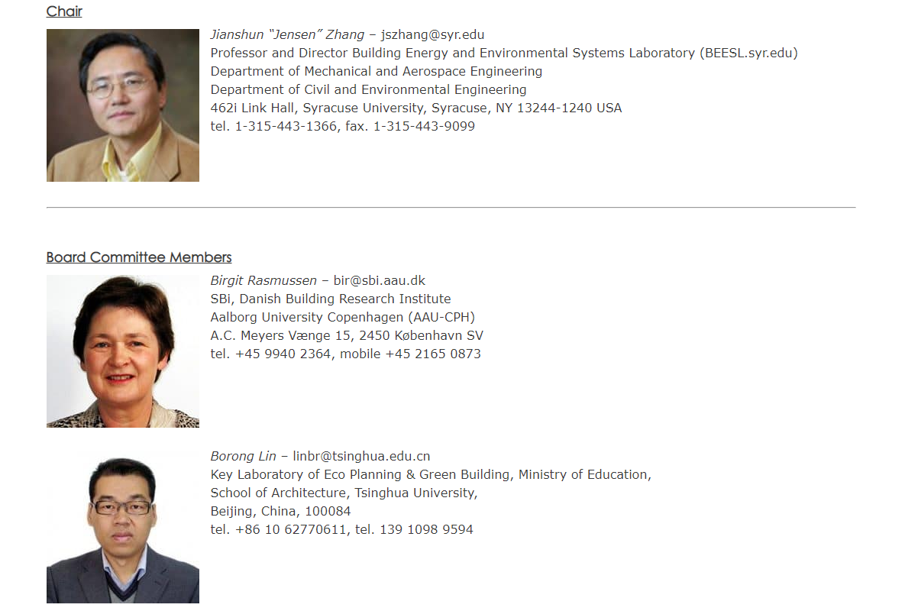

绿色建筑与城市环境国际研究中心
International Research Center for
G
reen
B
uildings &
U
rban
E
nvironment
当前位置：首页 > 学术动态 > 人事动态
张建舜教授当选国际建筑物理协会IABP主席
发布时间：2018年12月05日
2018年9月，雪城大学举办了第七届国际建筑物理会议（IBPC2018），汇集了来自33个国家的建筑工程，科学和设计专家。 在为期三天的活动中，张建舜教授 Prof. Jianshun“Jensen” Zhang在会议期间被正式任命为国际建筑物理学会(IABP)理事会主席。
IBPC2018（详情链接
http://ibpc2018.org/
）的主题是“健康，智能，有弹性的建筑和城市环境。”其论坛包括原创研究和开发工作的演示，创新绿色建筑技术的发现，展示和展览，以及对未来挑战和机遇的讨论。
国际建筑物理学会的治理由主席和理事会委员会组成。董事会委员会成员为10人，经过挑选是为了确保全球代表性。 在2018年至2021年的三年中，理事会委员会的组成如下：

主席 Jianshun Jensen Zhang - 美国（2012年加入）
董事会 Birgit Rasmussen - 丹麦（加入2015年） Borong Lin - 中国（加入2015 年） Fitsum Tariku - 加拿大（加入2012年）John Grunenwald - 德国（加入2018年） Marco Perino - 意大利（加入2012年） NeseGaniçSağlam - 土耳其（加入2018年） Paula Wahlgren - 瑞典（加入2015年） Ryozo Ooka - 日本（加入2015年） Sergio Vera - 智利（加入2009年） Staf Roel - 比利时（加入2018年）
@Copyright2019 南京大学绿色建筑与城市环境国际研究中心 地址:江苏省南京市汉口路22号南京大学鼓楼校区
友情链接： 南京大学； 南京大学研究生院； 南京大学建筑与城市规划学院